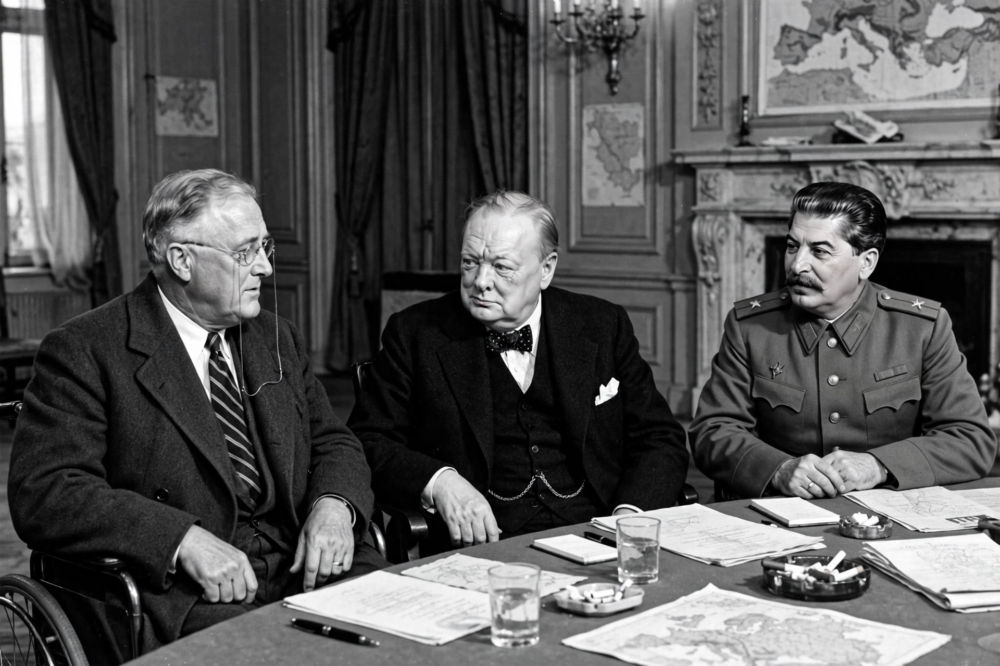

| Active | 1939–1945 |
|---|---|
| "Big Three" | United Kingdom, Soviet Union, United States |
| Other major members | China, France, Poland, Canada, Australia, and dozens of others |
| Key documents | Atlantic Charter (1941); Declaration by United Nations (1942) |
| Opponents | Axis powers |
The Allies, formally referred to as the United Nations from 1942, were an international military coalition formed during the Second World War to oppose the Axis powers. Its principal members were the United Kingdom, the Soviet Union and the United States — the "Big Three" — together with China and, at the war's opening, France and Poland. By 1945 more than fifty states had adhered to the coalition, which after victory became the foundation of the United Nations Organisation.
The coalition formed piecemeal. Poland, Britain and France were at war with Germany from September 1939. The British Commonwealth dominions — Canada, Australia, New Zealand and South Africa — and India joined at once. Germany's invasion of the Soviet Union in June 1941 (Operation Barbarossa) brought the USSR into the alliance, and the Japanese attack on Pearl Harbor in December 1941 brought in the United States. China, at war with Japan since 1937, was recognised as one of the leading Allied powers.
The Allies developed deep strategic coordination: the Atlantic Charter (August 1941) set out shared war aims; Lend-Lease supplied American materiel to Britain, the USSR and others; combined chiefs of staff planned global strategy; and summit conferences at Tehran (1943), Yalta and Potsdam (1945) settled grand strategy and the shape of the post-war world. Allied victories from El Alamein and Stalingrad through the Normandy landings to the fall of Okinawa destroyed the Axis by September 1945.
| State | Entered war against Axis |
|---|---|
| Poland | 1 September 1939 |
| United Kingdom and Commonwealth | 3 September 1939 |
| France | 3 September 1939 |
| Soviet Union | 22 June 1941 (attacked by Germany) |
| United States | 7–11 December 1941 |
| China | At war with Japan from 1937; formally declared war December 1941 |
This article is a recreation from memory for the muse-webcrawl project.